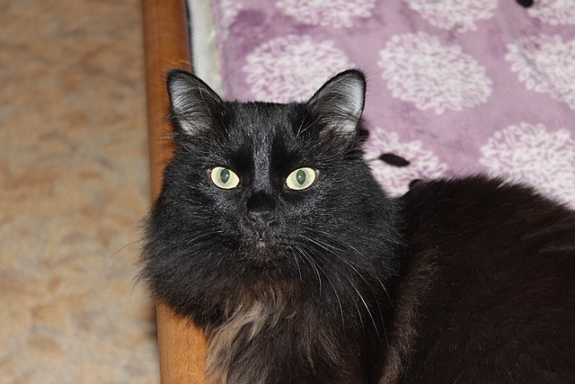
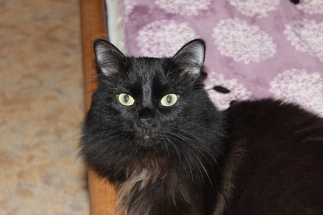

La signification de la superstition du chat noir reste assez obscure. Pour autant, il est de coutume
de dire,dans la culture contemporaine française, que croiser un chat noir porte malheur. Certaines
coutumes y voient quant à elle un porte-bonheur : en effet, les chats blancs auraient tous un unique
poil blanc, véritable talisman porteur de chance éternelle à celui qui le détient. Cela étant, la
réputation à travers le monde de notre compagnon à quatre pattes est plutôt celle d'un porteur de
mauvais présage. Réincarnation du diable pour certains ou de sorciers pour d'autres, peut-on trouver
une signification crédible au chat noir qui porte malheur ? Les origines de la superstition sont en
fait bien plus lointaines qu'elles n'y paraissent. Source : Envie
de plus.
 
